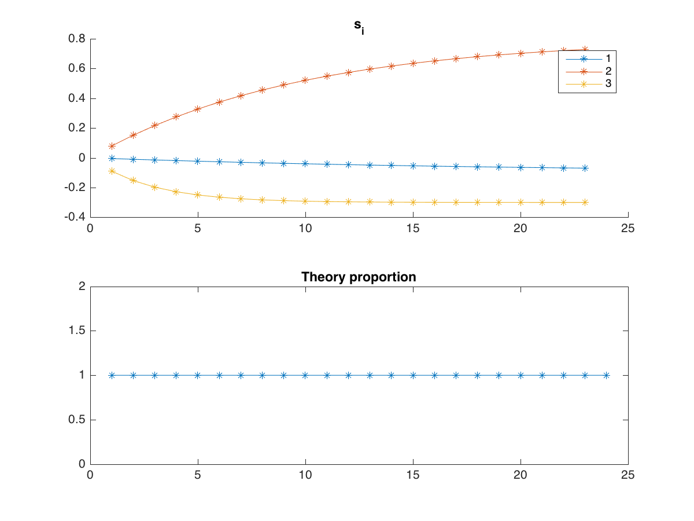
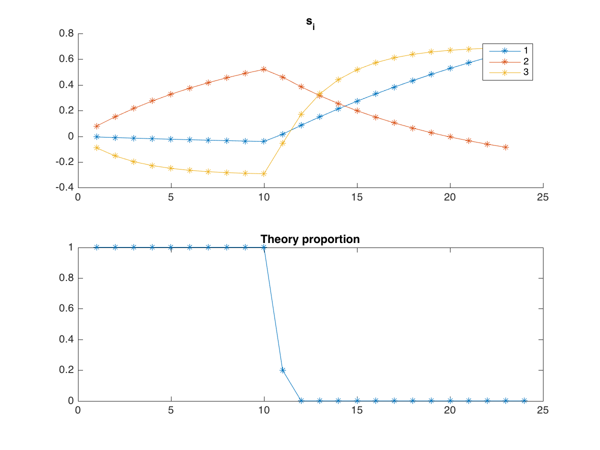

Table of Contents
1 Problem 1
Let's consider a polynomial of degree 2: \(P(x) = x^TQx + bx + c\), \(\nabla P = x^T(Q + Q^T) + b\), \(\nabla^2 P = Q + Q^T\)
\(Q + Q^T\) is symmetric, so it by the eigen value decomposition theorem there exist \(U\) an orthogonal matrix and \(\Lambda\) a diagonal matrix such that \(Q+Q^T = U\Lambda U^T\).
Let's denote \(\Lambda^+ = max(\Lambda, 0)\), \(\Lambda^- = min(-\Lambda, 0)\), then: \(Q+Q^T = \underbrace{U\Lambda^+ U^T}_{S^+} - \underbrace{U\Lambda^- U^T}_{S^-}\). Let's consider the polynomial \(P_1(x) = \frac12 x^TS^+x - \frac12 x^TS^-x + bx + c\). \(P_1 = P\), indeed, \(\nabla P_1 = x^T(S^+ - S^-) + b = x^T(Q+Q^T) + b= \nabla P\), and \(P_1(0) = P(0) = c\). We have that \(\frac12 x^TS^+x + bx + c\) and \( \frac12 x^TS^-x\) are both convexe because their hessian (\(S^+\) and \(S^-\) respectively) is non-negative.
2 Problem 2
The constraints \(A_1+A_2+A_3 \le 2 \max(0, T_1+T_2+T_3 - 3)\) leads to \(A_1 = A_2 = A_3\), eg \(T_1 + T_2 + T_3 = 3 = b\). The next constraints \(A_1 + A_2 + A_3 + \ldots + A_i \le 2\max(0, T_1 + T_2 + T_3 + \ldots + T_i- 3)\) can be written equivalently as : \( A_4 + \ldots + A_i \le 2(T_4 + \ldots + T_i)\) for \(i > 3\)
Let \(N = 24\) Let \(\gamma_i := \theta(\alpha T_i + \beta A_i)\), then \(s_i = (1-\theta)s_{i-1} + \gamma_i\), by immediate induction \(s_i = \sum_{j=1}^i (1-\theta)^{i-j} \gamma_j\), and \[S = \sum_{i=1}^{N} \sum_{j \le i} (1-\theta)^{i-j} \gamma_j = \sum_{j=1}^N \gamma_j (\sum_{i=j}^N(1-\theta)^{i-j}) = \sum_{j=1}^N \gamma_j \frac{1 - (1-\theta)^{N-j+1}}{\theta} \] \[S = \sum_{j=1}^N (\alpha T_i + \beta A_i) (1 - (1-\theta)^{N-j+1}) = \langle \Theta, \alpha T + \beta A \rangle \] Where \(\Theta_i = (1 - (1-\theta)^{N-i+1})\)
We denote by \(X^{(k)}\) a quantity \(X\) that relates to the group \(k\), therefore \(CES^{(k)} = \langle \Theta^{(k)}, \alpha^{(k)} T + \beta^{(k)} A \rangle\) for \(k = 1, 2, 3\)
Optmizing the individual CES:
\begin{align} \text{maximize} \; &\null \langle \Theta^{(k)}, \alpha^{(k)} T + \beta^{(k)} A \rangle \\ \text{subject to} \; &\null A + T = 1, \\& A, T \ge 0 \\& \sum_4^i A_j \le 2 \sum_4^i T_j \quad i = 4, \ldots, 24 \end{align}#+name minsec
%% Input a = 2; b = 3; theta = [0.05 0.1 0.3]; alpha = [-0.1 0.8 -0.3]; beta = [1.4 -0.3 0.7]; num_periods = 24; num_groups = 3; Theta = zeros(num_groups, num_periods); for k=1:num_groups for i=1:num_periods Theta(k, i) = 1 - (1-theta(k))^(num_periods-i+1); end end %% Results table = zeros(num_groups+1, num_groups); figures = [] %% Maximize individual CES for group=1:3 cvx_begin quiet variable T(num_periods); variable A(num_periods); maximize( Theta(group,:) * (-10000 * T + 1000 * A)) A + T == 1; 0 <= T <= 1; 0 <= A <= 1; T(1:b) == 1; for i = 4 : num_periods sum(A((b+1):i)) <= a* sum(T((b+1):i)) end cvx_end figures(group) = figure('visible', 'off') subplot(2,1,1) title('s_i') % calculate s_i for k=1:3 s = zeros(num_periods+1, 1); for i=2:(num_periods+1) s(i) = (1- theta(k)) * s(i-1) + theta(k) * (alpha(k) * T(i-1) ... + beta(k) * (1-T(i-1))); end table(group, k) = sum(s); hold on plot(s(2:num_periods), '*-'); legend(int2str(k)); end subplot(2,1,2); plot(A, '*-'); title('Theory proportion'); end
#+ATTRHTML :width 0.2  
Optmizing the minimum off all three CES:
\begin{align} \text{maximize} \; &\null t \\ \text{subject to} \; &\null A + T = 1, \\& A, T \ge 0 \\& \sum_4^i A_j \le 2 \sum_4^i T_j \quad i = 4, \ldots, 24 \\& t \le \langle \Theta^{(k)}, \alpha^{(k)} T + \beta^{(k)} A \rangle \quad k = 1,2,3 \end{align}#+name minmaxsec
%% max min CES cvx_begin variable T(num_periods) variable t maximize t 0 <= T <= 1 T(1:b) == 1 for i = 4 : num_periods sum(1 - T(b:i)) <= a* T(b:i) end for g = 1 : num_groups t <= ( Theta(g,:) * (alpha(g) * T + beta(g) * (1-T)) ) end cvx_end figures(4) = figure('visible', 'off') subplot(2,1,1) title('s_i') % calculate s_i for k=1:3 s = zeros(num_periods+1, 1); for i=2:(num_periods+1) s(i) = (1- theta(k)) * s(i-1) + theta(k) * (alpha(k) * T(i-1) ... + beta(k) * (1-T(i-1))); end table(4, k) = sum(s); hold on plot(s(2:num_periods), '*-') end subplot(2,1,2) plot(T, '*-') title('Theory proportion') for p =1:4 saveas(figures(p),[ 'plan' int2str(p)], 'png') end ans = table
3 Problem 3
\(S \subseteq \mathbb R^n\) Let \(C\) a convex contating set containing \(S\), and let \(x = \sum_i \lambda_i x_i\) convex combination of element of \(S\) and thus of element of \(C\), so \(x \in C\). Therefore \(conv(S) \subset \cap_{S \subset C, C \text{ convexe}} C\)
The convex hull is a convexe set containing \(S\), so \(\cap_{S \subset C, C \text{ convexe}} C \subset conv(S)\).
c/c \(conv(S) = \cap_{S \subset C, C \text{ convexe}} C\).
4 Problem 4
a) \(\mathcal G \rightarrow \mathcal G, Q \rightarrow Q_iQ\) is an injection because \(Q_i\) is invertible, so it is a bijection (because \(\mathcal G\) is finite), therefore: \[Q\bar x = \frac1k \sum_{Q \in \mathcal G} Q_iQ = \frac1k \sum_{Q \in \mathcal G} Qx = \bar x\] so \(\bar x \in Q\).
b) \(f(\bar x) \le \sum_i \frac1k f(Q_ix) = \frac1k \sum_i f(x) = f(x)\)
c) Let \(x\) be a solution to the convex $\mathcal G$-invariant. Then \(\bar x \in \mathcal F\) is also a solution. Indeed: – $f0(\bar x) ≤ f(\bar x) $ – for \(j\), \(f_j(x) \le 0 \implies \forall i f_j(Q_i x) \le 0 \implies \frac1k \sum_i f_j(Q_i x) \le 0\) – \(f_j\) is convexe, so \(f_j(\bar x) \le \frac1k \sum_i f_j(Q_i x) \le 0\) c/c: \(f(\bar x) \le f(x)\) and \(\bar x\) is in the feasible set, which means \(\bar x\) is optimal.
d) Let $\mathcal G $ be the set of all permutations in \(\mathbb R^{n \times n}\). It is clear that this set is a finite (of size \(n!\) ) group. Therefore we can adjoin the equality constraints \(Px = x \forall P \in \mathcal G\). Let \(x\) be apoint satisfying such condition, and let \(i, j \le n\), and \(Q\) be the matrix that permutates the ith and jth vector of the canonical basis. Then \(x_i = (Px)_i = x_j\). Therefore \(x\) has the form \(x_11, x_1 \in \mathbb R\).
5 Problem 5
#+name distance
1.9372
6 Problem 6
\(P_1\) facet description \(P_2\) vertex description Algorithm: for each vertex \(v\) in \(P_2\) if \(v \in P_1\) (\(Av \le b\))
Complexity: \(O(D^2NM)\) where \(D\) is the dimension, \(M\) the number of facets, and \(N\) the number of vertices.
- \(P_1\) vertex description \(y_1, \ldots, y_m\) \(P_2\) vertex description \(x_1, \ldots, x_n\) algorithm: Check if every vertex in \(P_2\) is a convex combination of the vertices of \(P_1\): \(y_1, \ldots, y_m\). For that, check if the following LP problems are feasible: for all vertex \(x\) in \(P_2\), \(\min_{\lambda} 0\) st \(\sum \lambda_i y_i = x, \sum_i \lambda_i = 1, \lambda > 0\)
- \(P_1\) facet description \(A_1x \le b_1\) \(P_2\) facet description \(A_2x \le b_2\) algorithm: Check if every row \(a_i^T\) in \(A_1\): Check that the following problem has a non negative solution: \(\min_{A_2x \le b} (b_1)_i - a^T x\)